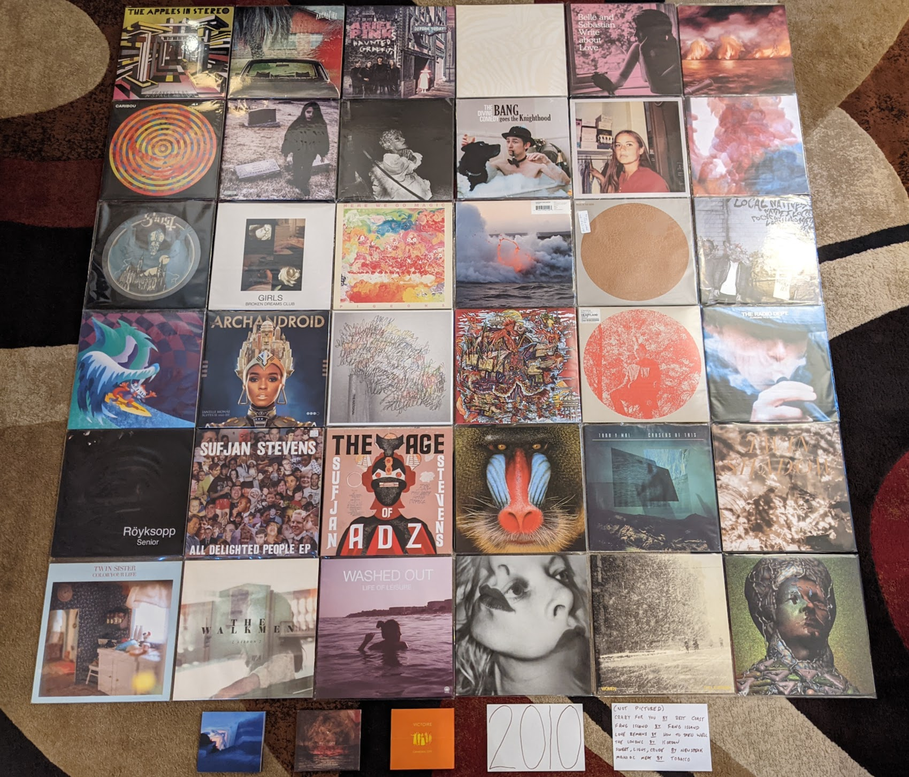

2010 Albums¶
I knew going in that this one was going to take a while. Just staging the below photograph took about an hour. I listened to more new music in 2010 than ever will again in any single year. This is the last year of doing things the old way (without Spotify) so I had to keep notes on what I was listening to, instead of making a playlist to keep track. Thanks to these notes, I know that I listened to (and rated!) 96 records in 2010. All 7 records I considered five stars out of five are on the list below, but 4(!) of the records that I gave 4.5 stars are no longer are among my favorites:
I Heart California by Admiral Radley - I gave this more credit than it deserved because I liked Grandaddy so much.
Avi Buffalo by Avi Buffalo - I’m horrified by the accusations against the leader of this band, and can’t bring myself to listen to them anymore.
Wilderness Heart by Black Mountain - Too safe and derivative for me now.
Epic by Sharon Van Etten - Just sounds so boring to me now.
This was my peak year of listening for a range of reasons. First, the indie music of the day was very much aligned with my tastes. Second, I had just moved to a new town (Rochester, NY) where I could see more live music, and spent quite a bit of time alone to indulge in my solitary hobbies like collecting music. Finally, I had mastered the old ways of discovering new artists, tracking down a way to get a taste, and acquiring the things I wanted to hear more of. It was easy and often inexpensive to get digital copies of pretty much anything, and I did. I’m also convinced that Spotify (released in the following year) through infinite choice is somehow making me less interested in finding new music. Or maybe I’m just getting old.
This was also the last year that I bought CDs as a primary means of consuming music. At this point I recognized that the CDs were just a vehicle for ripping MP3s and had no additional value as a medium. I started out the year buying CDs, but stopped a few months in. I have since nearly re-bought nearly all my favorites on vinyl, a format that is an experience unto itself. From here on out you will still see a few CDs but they are all New Amsterdam label contemporary classical releases that aren’t on vinyl, and in many cases cannot be streamed.
Finally, this was the year the seeds of this project were begun. I had been making lists of my favorite albums for several years by the time 2010 came around. I decided to make a list of my favorite albums from the decade that had just ended, and after commencing the project started making new discoveries of new albums, and seeing old albums in new ways. The project expanded and got more complicated. Eleven years later, here we are.
{kind=link}
Travelers In Space and Time - The Apples in Stereo - I seem to keep forgetting how good the last two records by this band are. I definitely rediscovered this one while compiling this list. Everyone seems to hear the 80s ELO influence here, but I also still hear a nice backbone of the psych and bubblegum that runs through their whole catalog. We also get a great contribution from Bill Doss in “No Vacation” which would be his last great track for Elephant 6 before he passed away way too young. [Memory: It still seems kind of crazy to me that such a big act played Bugjar on this tour, and I was glad to walk down the street to attend]
The Suburbs by The Arcade Fire - [2010 FAVORITE] The lead up to the release of this record is almost as memorable as the article itself. I remember studying the lead singles trying to imagine what the concept double record might sound like. They were the biggest band in indie and I was one of the millions who couldn’t wait to see what they came up with next. There was a bit of a backlash against this record when it came out, mostly because of how much mainstream attention it was getting. I think over time the profile of this recording has landed right where it belongs, acknowledged as one of the most important albums of its era. [Memory: I remember hearing a pre-release broadcast of “Sprawl II” on WITR when I was driving through McDonalds for breakfast. I was so into it I had to pull my car over and park to listen.]
Before Today by Arial Pink - Not as consistent as the records that would follow, but this is where things would finally come into focus enough to work for me. The tracks “Fright Night” and “Round and Round” are outstanding, and rest of the material does just enough to make this a favorite album. [Memory: The first time I ever listened to this record I was on a flight for a work trip to Brazil. It was a stressful journey and I had to turn off this music which was making me feel more uncomfortable.]
Teen Dream by Beach House - There are some very classic records this year! I was already very on board with this band when they released this breakthrough album. It was a huge departure with way more brightness and pop. I saw them twice on this album cycle. It was quite the experience to see thousands of people shouting the lyrics to “Take Care” at the Pitchfork Music Festival, when I thought back to the band I saw play to a couple dozen people at a basement bar in London. [Memory: This album came with a DVD of very arty, mostly disturbing videos for each song. They are so memorable, it is hard to hear the songs without picturing these videos.]
Write About Love by Belle & Sebastian - This is the album where Sarah Martin’s vocal contributions started to come to the foreground. “I Didn’t See It Coming” is one of my favorite latter day B&S songs. This is also where things started to slide downhill a bit from their second career high. Still an excellent indie pop record. [Memory: I remember that I barely realized this came out at the time. This was kind of shocking to miss a release from one of my all time favorites, but that is how much great music there was at the time.]
The Besnard Lakes are the Roaring Night by The Besnard Lakes - I always have a hard time picking my favorite by this husband/wife band. I think it might be this one. They master the combination of post-rock atmospherics, dream pop and guitar based alt rock. I think it is the guitar work that really pushes this one over the top. “And This Is What We Call Progress” might be the best encapsulation of what these guys do so well.
Crazy for You by Best Coast - The best of the surf rock revival records, this holds up pretty well a decade later. [Memory: They were so disappointing live, I have never been able to see their music the same way.]
Television Landscape by William Brittelle - Thank you eMusic for pointing out this record, which would not only introduce me to one of my all time favs, but get me up to speed with New Amsterdam records. This isn’t in the “indie classical” (lol) territory that was typical for NewAm and is more of an art rock record. A fuzzy, somewhat psychedelic concept album that tells the story of someone going in and out of sleep watching late night tv. The Miami Vice themed “Sheena Easton” is one of my all time favorite songs. [Memory: There were some truly awful lipsynced video performances on YouTube of this record back in the day. I kind of wish they still existed. They really fit the vibe of this record somehow.]
Swim by Caribou - All of a sudden Dan Snaith was making music that was somewhat dance-able. I don’t think this was actually intended for the club, but the beats are there. Very much still album oriented, art-electronic, the connections to dance music made this much more accessible to the indie kids. That said it is still the smart kind of electronic music I love as well. [Memory: The beats and pace of this album made it a workout playlist favorite of the day. Listening to this brings up strong memories of the gym in my office basement.]
Crystal Castles II by Crystal Castles - This is some truly obnoxious electronic music that I have to be in the right mood for. The slight bit of goth they mixed into their formula is what made me enjoy this record more than their other work. I really have to be in the right mood for this. [Memory: It is hard to think of this band without also remembering hipster runoff]
Halcyon Digest by Deerhunter - I see the career of this band like a projector being brought into focus. The earlier records got progressively less fuzzy and you could see a wonderful image taking shape. That picture is perfectly formed here. The wonderful pop hooks bring everything together perfectly. For the next record, the dial was turned too far. [Memory: I tend to associate this band with Bradford Cox, but seeing them perform live made me realize how important Lockett Pundt is, especially to this record.]
Bang Goes the Knighthood by The Divine Comedy - By far the most recent edition to my list for this year, I’m not sure why I didn’t listen to this at the time. Neil Hannon has always been making the kind of chamber indie-pop that I love, but I only discovered his catalog in the last few years. I do remember eMusic featuring this heavily when it came out, but that cover just didn’t do it for me. A solid record like always from this guy, with two of his best tracks in “Assume the Perpendicular” and “The Lost Art of Conversation”. [Memory: For years I had avoided this era of the Divine Comedy catalog until the vinyl reissues in 2020. Why I have no idea, this is great.]
I Will Be by Dum Dum Girls - Being derivative can be a compelling art form, and I don’t mean that derisively. Kristen Gundred has made a great body of work by imitating and interpreting the sounds of the past. Here we get some great old fashioned garage rock with a touch of surf rock drumming. It is very much the sound of the past and of 2010. “Bhang Bhang, I’m a Burnout” is a killer single. [Memory: Gundred assembled a very solid band to interpret her home recordings live. They were very memorable for their sound and image. I managed to see them open for other acts on three occasions. They toured a lot.]
Skit I Allt by Dungen - A much lighter take on their psychedelic sounds. It’s almost like they saw all the english language imitators like Tame Impala and decided to do something a bit different. It worked out very well. [Memory: Seeing them at Mohawk Place in Buffalo was a fantastic show. It also made it clear how talented this band is as instrumentalists.]
Fang Island by Fang Island - A completely unique record that feels like metal combined with church music. Such a happy, uplifting record. No one has ever made anything close to this again, even Fang Island. [Memory: These guys played a great opening set for Joy Formidable at the old Club at Water Street. One of my favorite live shows ever.]
Opus Eponymous by Ghost - More directly connected to the metal of the past (particularly Blue Oyster Cult) than the music that would come later. The whole concept of the band is fully aligned here though. The over the top Satanism, the focus on melody and atmospherics are all here. The songs aren’t as consistent as the later records, but “Ritual” is still the best summary of what these guys do well. [Memory: I watched the video of “Ritual” dozens of times on YouTube and was fascinated by the image that they projected]
Broken Dreams Club by Girls - A much smaller work in both scope and sound than what would come before and after. This little EP is also an essential part of this bands very limited output. Much more directly reverential of the early 60s pop music that was a significant part of their debut album. “Broken Dreams Club” is a fantastic old fashioned torch song. [Memory: I saw them play at Pitchfork 2010 right after this was released. I’m really glad I was able to catch them during their very short time of existence.]
Pigeons by Here We Go Magic - This is such a wonderfully strange recording. I really liked the five person incarnation of this band. Everything is so fuzzy and warm, weird and beautiful. The lead singer of this band is great, but the band was never the same after the other members were ditched, especially bassist/producer Jen Turner. [Memory: I saw them open for Dr. Dog at Town Ballroom in Buffalo, and it was a great show. A very high Jen Turner decided that she wanted to feel the fabric my shirt was made out of. It made me and her bandmates uncomfortable, and they led her outside.]
Momo by Hooray for Earth - The start for another one of those bands that had a brief, but productive run in the 2010s. This is a little more lowfi than what would come later, but those big layered guitars and synths are in place, with the pretty lead vocals. One of the more underrated things they can do are those weird, avant garde guitar solos they occasionally break out, like in “Comfortable, Comparable”. [Memory: These guys were the first to play at a memorable three act show at German House in late 2010. It wasn’t great actually, as it seemed like they were struggling to represent this kind of music in the live setting.]
One Life Stand by Hot Chip - The second album by the more mature version of this act is another winner. Some really fantastic pop songs with a techno backbeat. [Memory: I like the title song to this album so much I decided that I only needed a promotional 45 of that track by itself. It also confused me when I took the picture above and a grabbed the wrong album for the picture, oops.]
Love Remains by How to Dress Well - In general I didn’t love the weird minimalist electro-R&B stuff that Pitchfork was pushing back then. I do like this though. [Memory: I saw them play some of the tracks off this record with a string quartet at Pitchfork 2011. I know there was a recording of this, I wish it was on Spotify, as it is the definitive recording of songs like “Suicide Dream 2”.]
Penelope by Sarah Kirkland Snider - This was the high water mark for the “indie classical” thing that Pitchfork was trying to make happen, and even if they won’t admit it now, so were the artists that got lumped in with the fake genre. It is amazing how many of the things under that umbrella involved Shara Worden, and here she is. Described accurately, is a stunning collection of art pop written and performed by classically trained musicians. [Memory: I remember trying to decide if I needed a CD copy of this.]
The Longing by Kordan - The best part of my short time writing for the music blog was getting access to lots of free music that bands would send in. This was the best record I found that way. A really interesting combination of electro-indie and classic guitar based goth, this is right up my alley. This never really got any mainstream press. Makes me wonder how many other great records are out there and never find an audience. [Memory: I was so glad to find a note about this record in the album list I compiled at the end of 2010. Without this I probably would have never heard it again. How many things like this have I forgotten?]
Gorilla Manor by Local Natives - I was really surprised at the time that the indie kids were going for such straight ahead rock music. This is the basics of pop/rock done to perfection, with some particularly great vocal harmonies. “Camera Talk” is one of my all time favorite songs. [Memory: At Pitchfork 2010 these guys were the hot band of the moment. I’ll never forget the kid towards the front of the stage who held up his vinyl copy of this record that he thrust towards the stage in rhythm to the music. It was a great show.]
Mines by Menomena - A more mature effort from a band that had been making lighter more whimsical faire. It was a bit of a risky move, but it works out. The saxophone and floor toms are still carrying things, and the vocals are delivered with same yelp like intensity, but this is a more measured and thoughtful collection of songs. [Memory: This was another record that made this list years after the initial list was made. I was hearing so much music around this time, I lost track of some pretty great records. Glad I still had the vinyl record to remind me!]
Congratulations by MGMT - I liked the first record, but it didn’t prepare me for this. The fusion of classic psychedelic sounds and the more modern electro-indie was a revelation. “Flash Delirium” does so many different things really well, and is an all time favorite. [Memory: This album got a mixed reception at release, as a result of how different it was. I always had a sense its reputation would grow over time, and this turned out to be true.]
The Archandroid by Janelle Monae - A stunning genre study that covers everything from the Minneapolis sound to Bond themes. I really miss this and fear that she is never going to make music like this again. [Memory: I became aware of this record thanks to the “Sound Opinions” show that used to play on WRUR back in the day.]
High Violet by The National - Matt Berninger’s voice is so beautifully weathered on this record. I also feel like this catches the band at their creative peak before they (particularly the Dessner brothers) became distracted by side projects. A stunning work, and one of the finest indie records made by this generation. [Memory: I saw them perform in Cincinnati as a part of the MusicNow festival in 2011. They performed “Vanderlyle Crybaby Geeks” using only natural concert hall acoustics. It didn’t totally work, but it was a memorable moment no less.]
False Priest by Of Montreal - The last album I love, from one of my favorite artists of all time. The albums after this have their moments, but this is the last one that I like as a whole. This is another “low budget Prince” record, with increasingly edgy and intellectual lyrics. This whole album feels like Kevin Barnes is bumping up against his limitations as a songwriter and vocalist, but it never stops being compelling. Some great guest spots by Janelle Monae and Solange. [Memory: My vinyl pre-order of this record came with a tee-shirt that is still a star player in my wardrobe]
Sweet, Light, Crude by Newspeak - Classical music nerds start a rock band and accidentally rediscover prog without realizing it. I really miss the spirit of the early NewAm releases. [Memory: There used to be a great live performance of this on YouTube. I feel like the NewAm folks are embarrassed by the early days of their scene, which in my opinion was the best part.]
Heartland by Owen Pallett - Afraid of being sued, he starts releasing the music of the Final Fantasy project under his own name. A huge step up in production quality and instrumentation, with the same quirky bipolar songwriting of the first two records. A fine transitionary work that is setting up the all-time classic that would follow. [Memory: My vinyl copy of this record has a single large pop in the first track. I listened to it so much, I can hear it when I stream the track on Spotify.]
Clinging to a Scheme by The Radio Dept. - Such a pleasant indie-pop record. This is the kind of sincere, serene music that only Scandinavian bands can make for some reason. [Memory: This music was unexpectedly compelling live, as I discovered at the Pitchfork festival in 2011].
LP4 by Ratatat - The last album (and my second favorite) of the classic period for this band. Each of the albums added new elements, and they all add up to something pretty compelling, that manages to avoid sounded cluttered. This feels like a more organic, American version of Justice. [Memory: I remember ordering this for release day at Lakeshore Record Exchange. At this point I was still buying most of my music in physical form, and was split between the CD and Vinyl format. This seemed like something I wanted to own on vinyl, and that was the right choice.]
Senior by Royksopp - It is very strange that they went out on this moody ambient masterpiece, but I’m not going to complain. Not a whiff of the pop songcraft that ran through the first three records, but still a great collection of electronic music that uses their fundamental sound in a very different way. [Memory: I listed to this on repeat during a flight to Brazil in December of 2010. It now is the sole record on a spotify playlist called “Airplane Sleepytime”.]
All Delighted People by Sufjan Stevens - I used to see this as the last stand of the Sufjan who made the “States Project” records, but today I hear it more as the analog flip side to Age of Adz. It is the last hurrah for the amazing big band that toured Illinois though. I increasingly wonder if my favorite era of his music will end up being the span between The BQE and Age of Adz. [Memory: I bought a used copy of the now departed Spiral Scratch records in Buffalo. It was before the value of indie vinyl blew up and I couldn’t have paid more than 10 bucks for this amazing record.]
The Age of Adz by Sufjan Stevens - He had made some radical changes in the past, but none as big as the shift to glitchy electronic music here. A stunning record with a level of invention that he has never reached again. [Memory: I loved this whole thing immediately, with the exception of “Impossible Soul”. It took me a long time to appreciate all the over the top auto-tune, but I now see it to be some of his finest work.]
Wild Smile by Suckers - Fun music that doesn’t take itself seriously at all. They were refreshing in a very serious time in indie rock. It is almost like the comedy version of the way more popular Local Natives. I wish these guys got more attention in their short career. [Memory: This is one of the last bands that I discovered from Greg at City Lights records in State College, PA. He wanted me to hear them since they opened for MGMT and Menomena, to of my favorite bands at the time.]
Causers of This by Toro y Moi - At the time this was considered one of the more difficult chillwave records. We now think differently, and realize that chillwave was more of an aesthetic that was applied to a range of musical styles, in this case experimental electronic music. I loved this record back then, I may love it a bit more 11 years later when I write this. Wholely unique, I’ll never get tired of this [Memory: This was one of the last CDs I ever went down to a record store to purchase as a primary means of consumption. It was obscure enough to not be available on eMusic, but the great “alternative” record store down the street (Lakeshore Record Exchange) had it out on the featured rack in the electronic area.]
Forget by Twin Shadow - At the time, like many other music fans, I tended to lump many things into the “chillwave” bucket that were really something else entirely. This album is a rare example of something that I didn’t appreciate as chillwave that was very much inline with the conventions of the aesthetic. Maybe the quality of songwriting felt to high for that scene. I’m always in the mood for this amazing record. [Memory: Every now and then Carles from Hipster Runnoff would make a genuine post in his own voice about a artist he actually liked. His post of the song “Tyrant Destroyed” is how I found one of my favorite albums.]
Maniac Meat by TOBACCO - Some very experimental electronic music. Of all the releases by these guys under different names, this is for some reason my favorite. It is almost like a disturbed version of Kraftwerk. [Memory: I still like this. But I feel like the me who could discover music like this was a different person.]
Color Your Life by (Mr) Twin Sister - “All Around and Away We Go” is a remarkable pop single. Everyone else was making synthpop and these guys were skipping right to late 80s sophista-pop. Of all the bands from that time I find it interesting that this group is still alive and very active. [Memory: I saw them play at two consecutive Pitchfork after shows. They opened for Bear in Heaven in 2010 and were the headliners the next year. Great live band.]
Cathedral City by Victoire - Of all the young classically train musicians who got lumped into the fake “indie classical” thing, Missy Mazzoli is my favorite. Her band Victoire almost justifies the existence of the genre. A rock band who plays like a chamber ensemble, this is some super compelling stuff. Mazzoli’s music is so interesting. Something always seems a little off in just the perfect way. [Memory: I feel so lucky that I got to see them perform most of this album at Crossing Brooklyn Ferry in 2012. That is a performance I will always treasure.]
Libson by The Walkmen - This is their record that I tend to underestimate until I put it on. It is probably the most subtle of their fantastic catalog, but also one of the finest. A more upbeat, surf rock influenced affair than the prior release, but those amazing horns remain. [Memory: I saw the band a few times live, but I think the best performance was at the Town Ballroom in 2011 on this tour.]
Life of Leisure by Washed Out - The use of “Feel It ALl Around” as the theme song to the show “Portlandia” made this the definitive article of 2010s hipster culture. I think in retrospect it is also the best summation of the “chillwave” aesthetic. [Memory: I don’t know that anything makes me more nostalgic for my early 30s more than the song “Get Up”]
Gemini by Wild Nothing - I wish more bands had decided to operate in the space these guys explored. Combining the chillwave aesthetic with the conventions of jangle pop is very compelling. [Memory: You wouldn’t think it from the album, but this is a great live band. I was blown away by how good they were when I saw them at NxNE 2011.]
Public Strain by Women - One of the most unique bands that every existed, their second and final album would be their definitive statement. There is so much going on here, ambient electronic soundscapes, angular post-punk, straight ahead pop hooks, and a few things I can’t really identify. A difficult but rewarding listen. [Memory: This was one of the last great records I remember discovering during one of the best years in music I can remember.]
Odd Blood by Yeasayer - This album was a bit of a shock when it arrived. Their debut had given some “serious music” vibes, and all of a sudden they wanted to party. Another one of those albums that seems way more “chillwave” in retrospect. That cover seems to be anticipating the vapor wave aesthetic that would develop in 2011! [Memory: Hearing the rhythms of “Ambling Alp” echoing through Union Park might be my most enduring memory of my various Pitchfork Music Festival experiences.]